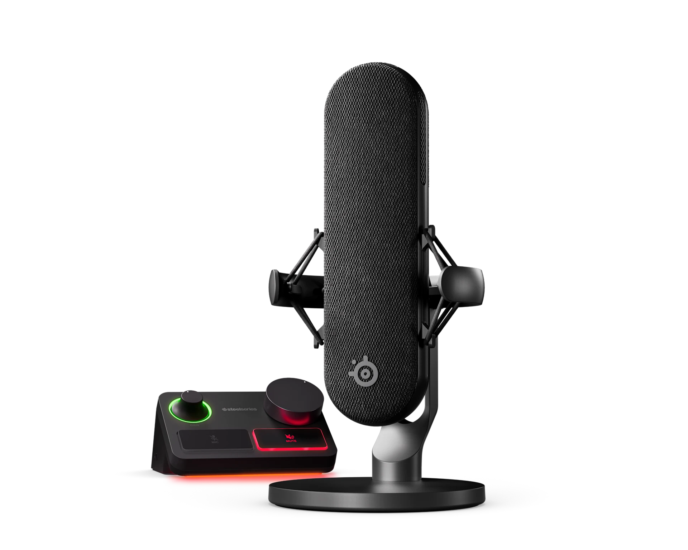

← All Guides
Best USB Microphone for Streaming 2026: What 4 Reviewers Agree On
Aggregated from 4 YouTube reviews · Updated 2026-10-03

SteelSeries Alias Pro
PC Gamer's best microphone for streaming 2026 — the included XLR Stream Mixer and Sonar AI noise cancellation make pro stream audio easy; recommended by 2 of 4 reviewers.
📊 Quick Comparison
| # | Product | Recommended By | Best For | Price |
|---|
| 1 | SteelSeries Alias Pro | 2/4 reviewers | Dedicated streaming setups | $300-330 |
| 2 | Shure MV7+ | 3/4 reviewers | Podcast-to-stream hybrid creators | $250-280 |
| 3 | Shure MV6 | 1/4 reviewers | Desktop gamers who hate mic technique | $120-150 |
| 4 | Sennheiser Profile Streaming Set | 1/4 reviewers | Streamers who want mic + arm in one box | $180-200 |
💬 Reviewer Consensus
Common Pros
- SteelSeries Alias Pro: PC Gamer's 2026 best streaming mic — Stream Mixer + Sonar AI noise cancellation simplify multi-source stream audio (2/4 mention)
- Shure MV7+: hybrid USB/XLR with studio-grade onboard DSP (Auto Level, denoiser) praised by PC Gamer and Podcastage (3/4 mention)
- Shure MV6: auto gain-levelling keeps vocals consistent even at desk distance — PC Gamer's best gaming mic (1/4 mention)
- Sennheiser Profile Streaming Set: complete mic + boom arm bundle under $200, no fiddly software needed (1/4 mention)
Common Cons
- SteelSeries Alias Pro: ~$330 and really needs a boom arm (sold separately) to sound its best (2/4 mention)
- Shure MV7+: ~$280 is steep, and it needs to sit close to your mouth — arm/stand sold separately (2/4 mention)
- Shure MV6: noise reduction can be aggressive; chunky stand footprint for small desks (1/4 mention)
- Sennheiser Profile Streaming Set: no software suite for tweakers — what you hear is what you get (1/4 mention)
🔍 Detailed Breakdown
SteelSeries Alias Pro
🛒 Amazon🛒 TemuPC Gamer's best microphone for streaming 2026. The included Stream Mixer (XLR preamp with +48V phantom power) plus Sonar software with AI noise cancellation make multi-source stream audio easy, with studio-like capture — but it's pricey and really wants a boom arm.
Connection: USB-C (XLR via included Stream Mixer)
Features: Stream Mixer with XLR preamp, Sonar AI noise cancellation, compressor/EQ presets
Polar Pattern: Cardioid
Sample Rate: 24-bit/48kHz (USB)
Type: Condenser
Best for: Dedicated streaming setups · $300-330
Shure MV7+
🛒 Amazon🛒 TemuPC Gamer's best podcast mic 2026, lab-tested by Podcastage too: warm dynamic tone with excellent onboard DSP (Auto Level, denoiser) whose settings are stored on the mic. The USB/XLR hybrid gives an upgrade path to XLR without replacing the mic later.
Connection: USB-C + XLR
Features: Auto Level, denoiser, reverb, Digital Popper Stopper, LED touch mute
Polar Pattern: Cardioid
Sample Rate: 24-bit/48kHz
Type: Dynamic
Best for: Podcast-to-stream hybrid creators · $250-280
Shure MV6
🛒 Amazon🛒 TemuPC Gamer's best gaming microphone 2026: auto gain-levelling keeps your voice consistent even when the mic sits on your desk at a distance. $149 with a sturdy desk stand in the box; the noise reduction can be a touch aggressive.
Connection: USB-C
Features: Auto Level, real-time denoiser, Digital Popper Stopper, desk stand included
Polar Pattern: Cardioid
Sample Rate: 24-bit/48kHz
Type: Dynamic
Best for: Desktop gamers who hate mic technique · $120-150
Sennheiser Profile Streaming Set
🛒 Amazon🛒 TemuPC Gamer's best USB mic + boom arm bundle: warm, crisp audio with a flexible arm and physical mute/mix controls, everything in the box for under $200. No software suite — the sound is good enough that you don't need one.
Connection: USB
Features: Boom arm included, mute button, headphone and mix controls
Polar Pattern: Cardioid
Sample Rate: 24-bit/48kHz
Type: Condenser
Best for: Streamers who want mic + arm in one box · $180-200
❓ Frequently Asked Questions
Why is the SteelSeries Alias Pro our top pick?
It's recommended by multiple reviewers for its overall balance of performance, features, and value. See the detailed breakdown above.
📺 Video Sources
Show 4 review videos
📺
PC Gamer — Best microphone for gaming in 2026: from streaming to podcast mics, these are my top picks
Watch Video📺
PC Gamer — SteelSeries Alias Pro microphone review
Watch Video📺
PC Gamer — Shure MV7+ podcast microphone review
Watch Video